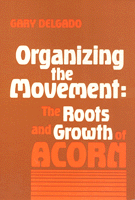

The inner-workings of ACORN, the Association of Community Organization for Reform Now
The inner-workings of ACORN, the Association of Community Organization for Reform Now


 The inner-workings of ACORN, the Association of Community Organization for Reform Now
The inner-workings of ACORN, the Association of Community Organization for Reform Now

|  |
Organizing the MovementThe Roots and Growth of ACORNGary Delgadopaper EAN: 978-0-87722-492-1 (ISBN: 0-87722-492-7) |
"An honest and excellent sociological account and analysis of the ACORN [The Association of Community Organizations for Reform Now] saga. This is an exceptionally readable blend of academic and participant-observer perspectives. Delgado uses many tangible examples and issues from our fast moving and, at some levels, often kaleidoscopic times in which deep economic and political issues remain constantly challenging."
—Choice
The Association of Community Organizations for Reform Now (ACORN) is the single largest community organization in the United States. It has organized welfare recipients, homeowners, and farmers battling to save their lands and, like other community groups, it has combined work on the most local of neighborhood issues—redlining, street safety, and garbage collection—with larger fights concerning issues such as civil rights, utility rates, property taxes, and even national politics. It has 50,000 members, branches in more than twenty states, and is still growing.
No one is better qualified to write about the inner workings of ACORN than Gary Delgado. For over 14 years he has worked as an organizer, trainer, and recruiter with ACORN. He was given access to all organizational files, including internal memos and organizational archives, and through his work he has attempted to influence the political direction, social composition, tactics, and strategy of the Association.
In Organizing the Movement, Delgado investigates how community organizations can play a key role in building a progressive coalition for social justice in the U.S. He follows the development of community organizations from the early seventies through the mid-eighties, discusses the strengths and weaknesses of the major models of community organizing, and examines the relationship between the availability of financial, personnel, and ideological resources and the attainment of organizational goals.
Organizing the Movement is not simply the story of ACORN. It is an analysis of the process and the potentiality of community organization action groups and their ability to provide individuals with an opportunity to change at least a small portion of the world in which they live.
"...a rare, pioneering insider�s look at one of the most visible citizen organizations of today. Delgado�s broader understanding of citizen organizing, moreover, raises key issues likely to shape America�s politics and intellectual life in the coming years."
—Harry Boyte
Gary Delgado is a founding member of ACORN and is the director of the Center for Third World Organizing. He holds a Ph.D. in Sociology from the University of California at Berkeley.
Sociology
Political Science and Public Policy
Labor Studies and Work
Labor and Social Change, edited by Paula Rayman and Carmen Sirianni.
Labor and Social Change, edited by Paula Rayman and Carmen Sirianni, includes books on workplace issues like worker participation, quality of work life, shorter hours, technological change, and productivity, as well as union and community organizing and ethnographies of particular occupations.
© 2015 Temple University. All Rights Reserved. This page: http://www.temple.edu/tempress/titles/353_reg.html.